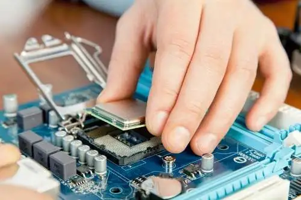
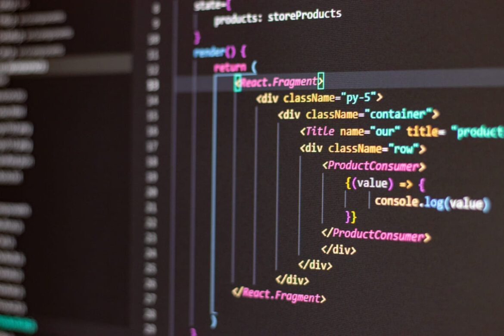

Fornecer soluções de tecnologia da informação de alta qualidade, personalizadas e eficazes, atendendo às necessidades específicas de nossos clientes. Nosso compromisso é simplificar a complexidade tecnológica, utilizando a inovação como motor para otimizar processos, aumentar a produtividade e impulsionar o crescimento dos negócios, sempre com ética e transparência.
Ser reconhecidos como líderes inovadores em soluções de tecnologia da informação, impulsionando a transformação digital de nossos clientes e contribuindo para um futuro tecnológico mais inclusivo e sustentável. Aspiramos a ser a referência em excelência, oferecendo serviços e produtos que superam as expectativas e geram valor real para nossos parceiros e a sociedade.
Integridade, inovação, excelência, colaboração e respeito são os pilares que orientam nossas ações. Acreditamos na importância da ética profissional, na busca constante por soluções inovadoras e na construção de relações sólidas com nossos clientes, colaboradores e parceiros, baseadas no respeito mútuo e na valorização da diversidade.
A manutenção de computadores é um conjunto de procedimentos técnicos destinados a garantir o funcionamento adequado dos sistemas computacionais. Isso inclui monitorar a qualidade das máquinas, analisar seu desempenho e realizar reparos quando necessário, visando a preservação e a melhoria do hardware e software
Programação é a arte de escrever instruções para computadores, permitindo que eles realizem tarefas e executem procedimentos específicos. Esse processo envolve a escrita, teste e manutenção de programas em diferentes linguagens de programação, como Python e JavaScript.
O desenvolvimento web é a área da tecnologia que se ocupa da criação, codificação e programação de sites e aplicativos, tanto na Internet quanto em intranets. Essa prática envolve não apenas a parte visual e de design, mas também a lógica de funcionamento e interatividade dos sistemas.
(32)998643187